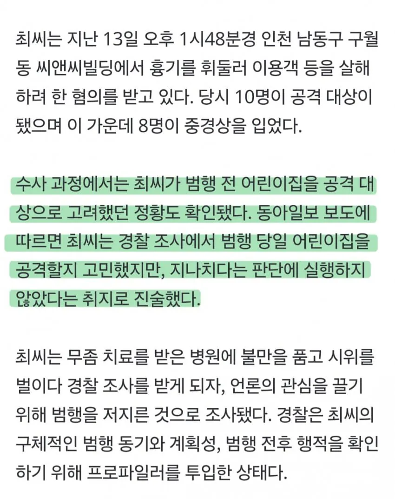

아 너무 화가 나네
죄 없는 형법살인 당하신분들때문에 개쓰레기 새끼들이 이득보고 있네... 바로 사형판결하고 영원히 이세계랑 격리시켜야하는데 아휴.
중국 상하이마냥 주요시설이나 거리에 무장경찰이 경비설수도없고 골때리네 진짜
비질란테가 유행하지않는이상 법안바뀜
이게 문제가 비질란테가 비범인( 웹툰 속 주인공 김지용 ) 마냥 있으면 솔직히 일반 시민이야 좋은데
이런 비범인은 그런 범행을 저지르지 않기 때문에 멕시코 꼬라지 나는 게 문제 ㅠㅠ
생각해보면 웹툰 비질란테에서도 주인공의 다크히어로 행위가 화제가 되고 유행해서 법이나 제도가 바뀌긴 했나.
2부 최종보스도 비질란테 같은 거 해봤자 아무것도 안 바뀌는 거 이해하고 타락한 거였음.
작가도 현실적으로 비질란테 같은 걸로 법이나 제도에 영향을 못 끼친다고 생각하고, 2부 결말을 그렇게 낸 거 같은데.
완전 미친새끼
교화충이라기보다 그냥 돈문제임 국가가 담당해야하는 기간이 늘수록 세금은 기가막히게 빠진다 그래서 미국도 내보내고있자너
결론은 님들이 쟤들 가둬놓는 비용 세금 더 내면됨 ㅇㅇ
어린이집 개 미친
이건 진짜 죽이자 찢어죽이자
시스템에 문제있는거 알릴꺼면 높으신분들 쓱싹하지 미친놈이네
자기 자신을 찌르지 그랬어
저런 거는 알아도 보도 안 했으면 좋겠네
왠지 ㅅㅂ 모방범죄 생길 거 같아서
엄벌주의 하고 교정시설은 그대로 하고 인원만 늘리면 되는데 뭐가 문제야
강력범들만 가는 교도소에는 밥도 항상 부족하게 주고, 공간도 부족하게 주고 하면 사형 집행 아니더라도 알아서 안에서 죽어줄텐데 이게 어렵나? 교도관이나 비용 늘릴 필요 없다고 그냥 그대로 두고 범죄자만 늘려ㅋㅋㅋ
흉악범 새끼들 비쩍 꼴은 상태로 힘 하나도 없이 병들어서 출소해야하는데 나오는 모습 보면 상태가 너무 좋음 시발 그게 말이 되나 그러니 교도소에서 힘 비축해놓고 나와서 또 범죄 저지르지
씨발새끼 아오지탄광보내버리고싶네
저런 흉악범죄 전과 있는데 또 저지르는놈은 진짜 사형시키면 안되냐? 뭔 씨발 한번만으로 사형시키는건 억울한 사람이 생길수도 있다 해도 이런새끼는 진짜 ㅅㅂ
전자발찌 실효성 개조또 없네
어린이집이였음 바로 사살당했지
근데 저상황에서 제가 소화기 던져서 저새끼가 맞아 죽으면, 정당방위 성립되나요?
한방에 죽었으면 참작될건데 넘어져서 흉기를 떨어뜨린 상대방을 여러번 찍어서 죽이면 안될걸
긴급피난이나 정당방위 인정은 될거 같은데 일격에 죽어버리면
한방에 죽여버려 소화기로 잘 노려서!
닉 뭐야 시발!
죽일사람 지원신청만 받아도 할사람 개많겠네ㅋㅋ
하 욕나온다 진짜
저런 짓 한 놈도 선이 있었네
이 십새끼가... 어린이집에서 했으면 넌 거기서 용감한 시민들한테 찢겨죽었다.
판사 : 아 교화 가챠 0.001% 실패했네 ㅎㅎ
이런놈들을 위해 존재하는게 사형임